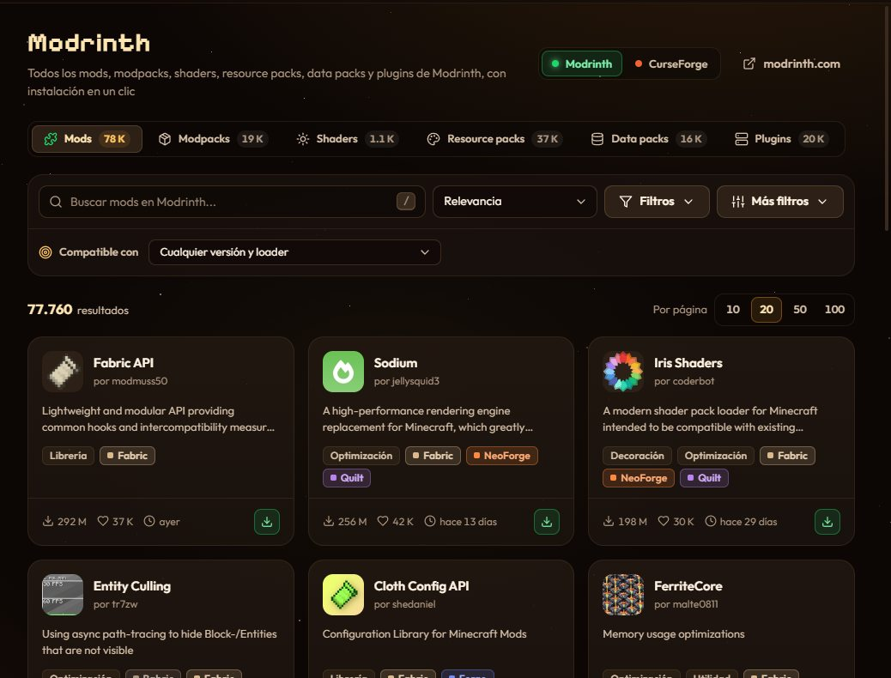
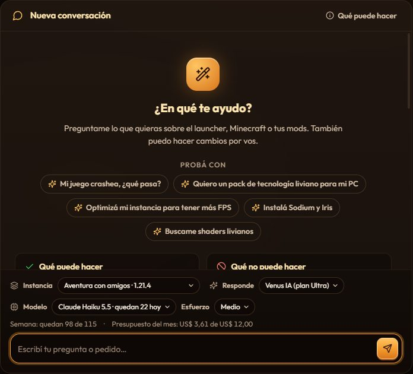

Modrinth y CurseForge
Más de 170.000 mods, modpacks, shaders, resource packs, data packs y plugins, con filtros por versión, loader, autor y descargas.
Instalá mods, modpacks y shaders en un clic, armá un servidor para jugar con amigos y dejá que el asistente con IA resuelva los crashes por vos.
Desde la primera instancia hasta tu propio servidor, sin tocar carpetas ni archivos de configuración.
Más de 170.000 mods, modpacks, shaders, resource packs, data packs y plugins, con filtros por versión, loader, autor y descargas.
Contale qué querés jugar, por ejemplo un singleplayer de zombies, y te arma una lista compatible con tu versión.
Diagnostica crashes, instala mods y optimiza tu instancia. Cada cambio se puede deshacer con un clic.
Paper, Fabric, Forge y más, con todo el server.properties a mano y para jugar con amigos sin abrir puertos.
Mensajes privados, invitaciones a tu mundo y salas de voz para coordinar sin salir del launcher.
Guardá cómo estaba tu instancia antes de cambiar mods y volvé atrás en un clic si algo se rompe.
Ajusta la RAM y las opciones de video según tu PC, sin pelearte con números.
Español, inglés, portugués, francés, alemán, japonés, coreano, chino y seis idiomas más.

Buscá en Modrinth y CurseForge desde el mismo lugar e instalá lo que quieras en la instancia que elijas.

Pedile lo que necesitás con tus palabras y lo resuelve dentro del launcher.
Mi juego crashea, ¿qué pasa?o
Optimizá mi instancia para tener más FPS.
El launcher es gratis. Los planes de Venus IA suman el asistente con los modelos de Claude y la conexión con Claude o ChatGPT.
Claude Haiku para empezar.
Haiku y Claude Sonnet.
Más preguntas con Sonnet.
Sonnet con esfuerzo alto.
Suma Claude Opus.
Opus con esfuerzo alto.
Precios en dólares, por mes. Cambiás de plan o cancelás cuando quieras desde el launcher.
Al instalar, Windows puede mostrar «Windows protegió su PC». Tocá Más información y después Ejecutar de todas formas: aparece porque el instalador todavía no tiene firma digital.
Sí. El launcher, los mods, los servidores locales y el Voice Chat son gratis. Solo el asistente con IA usa un plan de Venus IA.
Para jugar en servidores que piden cuenta original, sí. Para un jugador, en LAN o en tus servidores locales también podés usar una cuenta sin conexión.
Sí. Podés importar modpacks, agregar tus propios archivos e instalar cualquier cosa de Modrinth y CurseForge en instancias separadas, cada una con su versión y su loader.
Descarga solo de fuentes oficiales y revisa cada archivo. El asistente te pide permiso antes de los cambios importantes y guarda una instantánea para que puedas volver atrás.
Por ahora, solo para Windows 10 y 11.